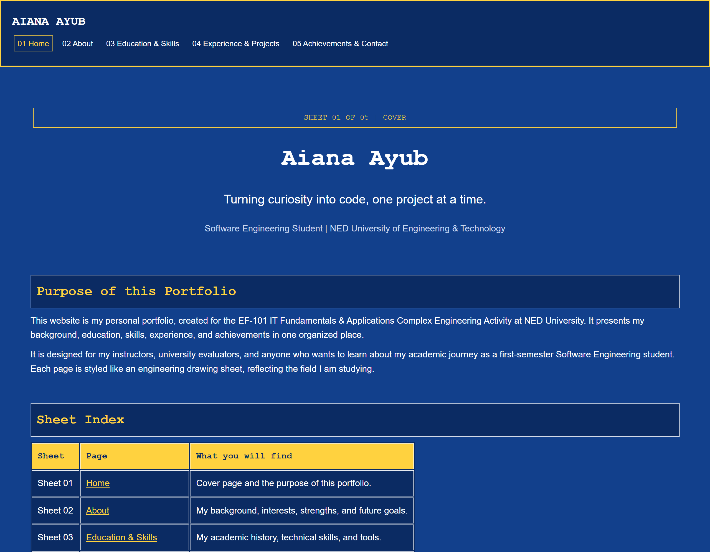
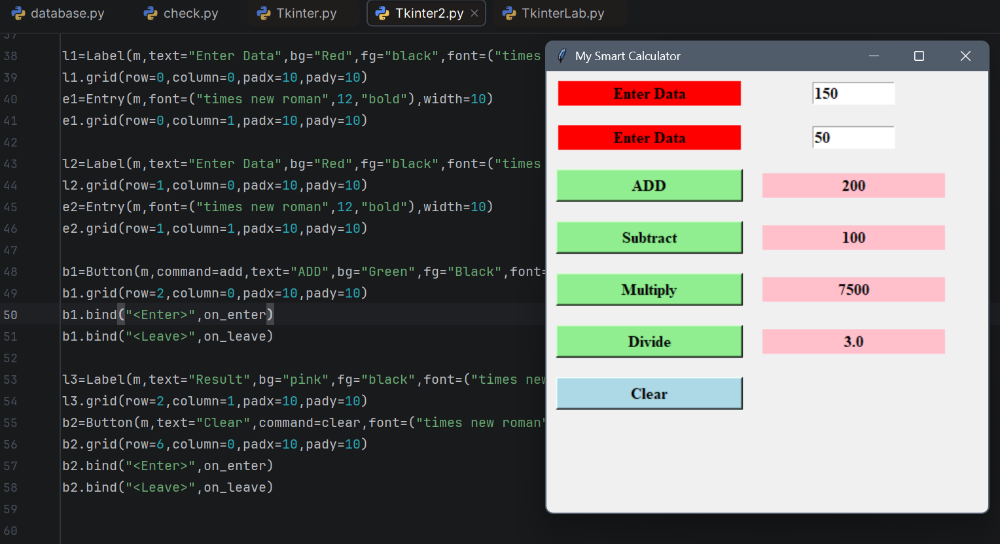

SHEET 04 OF 05 | EXPERIENCE & PROJECTS
Experience & Projects
Where I have practiced, and what I have built so far.
Experience
COURSES & TRAINING
Learning With Earning (LWE) Courses
I completed courses and received certificates in the areas below. These courses gave me basic practical skills in graphic design, office applications, website development, freelancing platforms, and digital content creation.
Graphic Designing Microsoft Office WordPress Web Development Fiverr Freelancing SEO Content Writing
UNIVERSITY | FIRST SEMESTER
Practical Labs at NED University
I am taking part in programming labs and HTML/CSS lab work. I have worked on Python programming exercises and built web pages using HTML and CSS.
Projects
Click a picture to view it full size.


Personal Portfolio Website
What it does: A personal portfolio website designed to introduce me and showcase my skills, education, experience, and projects. It follows a blueprint-inspired design theme and consists of five pages.
What I learned: Website structure, styling, page layout, navigation, CSS organisation, and basic responsive design.
Tools: HTML5 CSS3


Simple Calculator (Python Tkinter)
What it does: A simple calculator built as a lab exercise using Python's Tkinter module. It has buttons for addition, subtraction, multiplication, and division, and a clear button.
What I learned: Using Tkinter to build a graphical user interface (GUI), including creating a window, adding buttons, and writing functions for the buttons.
Tools: Python Tkinter
Design Decisions
- Blueprint theme: I chose an engineering drawing theme because I am studying Software Engineering. Each page is a numbered "sheet", and the footer works like a drawing's title block.
- One shared CSS file: All five pages are linked to css/style.css, so colors, fonts, and layout stay consistent, and a change made once updates every page.
- Colors and fonts: Blueprint blue, white, and drafting yellow, with a monospace font for headings and a plain Arial font for easy reading.
- Reusable classes: Boxes, tables, and lists share the same class names, which keeps the code shorter and easier to maintain.
- Responsive layout: The content is arranged in a single column, and CSS media queries reduce the text sizes, padding, and margins on small screens, so the pages stay readable on phones, tablets, and computers.